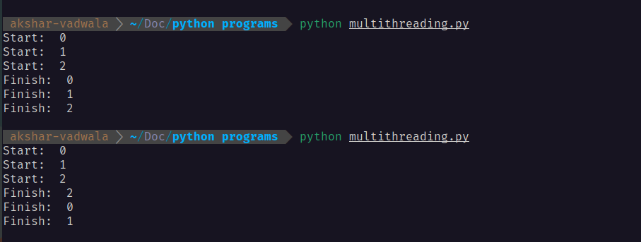
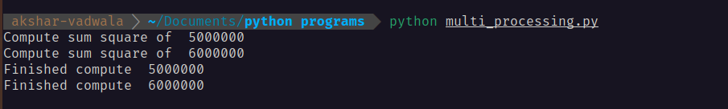
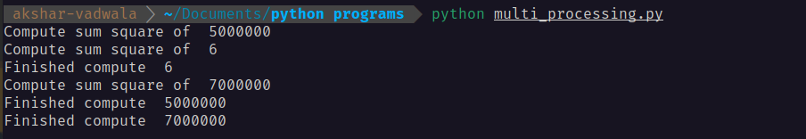

To understand concurrent execution in Python, you first have to understand the GIL (Global Interpreter Lock). The GIL allows only one thread to execute Python bytecode at a time. Python uses this mechanism to track memory object references securely — managing one global lock is easier and faster than tracking multiple individual locks.
Before diving into the code, it is important to distinguish between two core concepts:
- Concurrency: Making progress between overlapping time periods, often managed by a single processor quickly switching context between tasks.
- Parallelism: True simultaneous execution across multiple processors.
Single Core
Multi-Core
Python provides three distinct approaches to handle concurrent execution, depending on whether your bottleneck is processing power or waiting for external responses.
Execution
many tasks
I/O bound tasks
Shared memory
multiple cores
many tasks
CPU bound tasks
Bypasses GIL
many tasks
I/O bound tasks
Event loop
1. Multithreading — I/O Bound
Multithreading utilizes multiple workers to handle many tasks concurrently. It uses OS-managed threads contained inside a single process, relying on preemptive multitasking — meaning the operating system can stop a running task at any time without its permission.
Because multithreading is limited by the GIL, true parallel processing is not possible. However, it is highly effective for I/O bound tasks. When Thread 1 (which holds the GIL) is waiting for a response, it releases the GIL. Thread 2 then acquires it and executes its work.
import threading
import time
def download(file_id):
print("Start: ", file_id)
time.sleep(2) # Waiting to release GIL
print("Finish: ", file_id)
threads = []
for i in range(3): # Starting all threads
t = threading.Thread(target=download, args=(i,))
threads.append(t)
t.start()
for t in threads: # Waiting for threads to end
t.join()Output:

What is happening under the hood: The start prints execute sequentially. Once the threads hit the sleep function, all three drop the GIL. The OS wakes them up at slightly different times in milliseconds. Because the OS handles the waking and threads can reside on different cores, they acquire the GIL and finish non-sequentially.
2. Multiprocessing — CPU Bound
Multiprocessing achieves true parallel processing by deploying multiple workers across multiple CPU cores. Each process gets its own memory space and its own distinct Python interpreter — completely bypassing the GIL. This enables 100% multi-core CPU usage, making it the go-to for intensive tasks like image rendering and heavy math computations.
import multiprocessing
def heavy_math(number):
print("Compute sum square of ", number)
result = sum(i * i for i in range(number))
print("Finished compute ", number)
return result
if __name__ == '__main__':
nums = [5000000, 6000000]
with multiprocessing.Pool() as pool:
results = pool.map(heavy_math, nums)Output:

What is happening under the hood: The workload is physically divided across the processor. Core 1 receives the 5 million computation while Core 2 receives the 6 million. Both operate truly in parallel on different physical CPU cores.
What happens if the workloads are uneven? If we change the input to nums = [5000000, 6, 7000000], the behavior changes dramatically and reveals how the process pool actually distributes work.
Output:

What is happening under the hood: Core 1 starts processing
5000000while Core 2 starts processing6. Because computing the sum of squares for6is virtually instantaneous, Core 2 finishes immediately and — instead of waiting — the pool immediately assigns7000000to the newly freed Core 2. Workers operate completely independently, picking up new tasks the millisecond they go idle.
3. AsyncIO — I/O Bound
AsyncIO utilizes a single worker to manage many tasks simultaneously. Unlike multithreading, it employs cooperative tasking — tasks voluntarily yield control using the await keyword wherever they hit an I/O bottleneck.
It runs entirely on one thread with an event loop that pauses and resumes execution on a single CPU core. Because it stays strictly on one thread, it never fights for the GIL — zero lock contention. This extremely lightweight architecture is ideal for high-performance web servers, chat applications, and managing numerous open network connections.
import asyncio
async def fetch_api(req_id):
print("Send request ", req_id)
await asyncio.sleep(2) # Can't use standard time.sleep() here
print("Received ", req_id)
async def main():
# Multiple asynchronous coroutines
tasks = [fetch_api(i) for i in range(3)]
await asyncio.gather(*tasks)
asyncio.run(main())Output:
What is happening under the hood: In multithreading, the OS wakes up threads at random intervals. In AsyncIO there is only one thread — the event loop systematically tracks which I/O operations are pending and resumes execution deterministically the moment the data arrives.
Wrapping Up
All three approaches solve the same fundamental problem — doing more than one thing at a time — but in very different ways depending on what your bottleneck actually is:
Best for I/O-bound tasks (network calls, file reads). Multiple threads share one process, limited by the GIL but effective when waiting is the bottleneck.
Best for CPU-bound tasks (heavy computation, data processing). Multiple processes bypass the GIL entirely and run across physical cores.
Best for high-concurrency I/O (web servers, APIs, WebSockets). A single-threaded event loop with zero lock contention and minimal overhead.